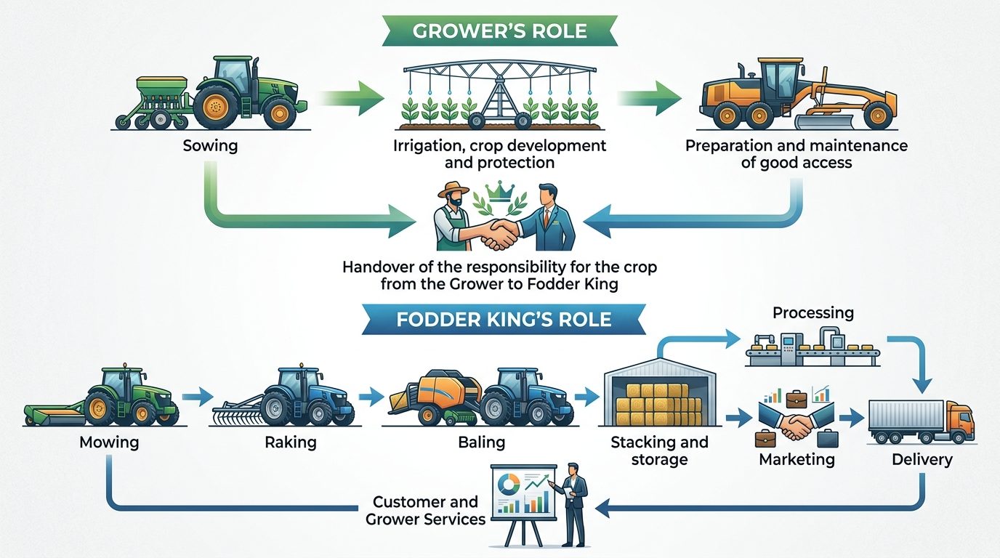

Using proprietary harvesting and processing technologies to deliver consistently higher quality fodder to domestic and international markets.
Since 1988, Fodder King has been at the forefront of Australia's fodder industry. Using patented technologies developed by our directors, we produce consistently higher average quality fodder under a wider range of weather conditions than previously possible.
This represents a world first for Australia — resulting in graded, branded and differentiated fodder products that meet stringent quality specifications.
Comprehensive range of high-quality fodder products marketed under the Fodder King label, serving Australia's leading livestock operations.
Lucerne, clover, cereal and pasture hays available in various bale sizes. Consistently graded for quality assurance.
Value-added compressed products ideal for intensive feeding operations. Uniform size ensures consistent nutrition delivery.
Finely processed chaff and meal products perfect for supplementary feeding and custom feed mixes.
Super-compressed bales engineered for efficient transport and storage, ideal for export and long-distance distribution.
Our fodder products are essential for production feeding across all major livestock sectors.
Our proprietary technologies enable us to produce consistently higher average quality fodder under a wider range of weather conditions than previously possible — a world first for Australia.
We partner with farmers who supply crops meeting our specific quality standards, supported by our demonstration fodder farm.
Using our patented technology, we harvest at optimal conditions to maximise nutritional value and quality retention.
Our processing methods transform raw fodder into graded, branded products — hay, cubes, pellets, chaff and more.
Products are marketed under the Fodder King label to local and export markets with stringent quality specifications.
Our patented technologies represent a genuine world first in fodder production methodology.
Produce quality fodder under a wider range of weather conditions than any other method available.
Every product is graded, branded and differentiated to meet stringent quality specifications.
A clear division of responsibility between grower and Fodder King ensures quality at every stage of the production chain.

Contract growers are organised into geographic clusters — each anchored by a Fodder King demonstration farm — maximising logistics efficiency within a 50 km operational radius.
Fodder King products are distributed under our label to local and export markets worldwide.
Serving all major livestock industries domestically. The Australian fodder market is valued at over A$750 million per annum ex-farm.
Established export relationships serving the growing livestock industries across Southeast Asian markets.
Supplying premium fodder products to the Middle Eastern market, where demand for quality Australian produce continues to grow.
Long-standing relationships with Japanese importers who value our consistent quality and reliable supply of premium fodder.
Asian countries import in excess of A$1 billion of forage products per annum. Fodder King is positioned to become Australia's leading exporter of premium fodder products into these growing markets.
Whether you're a livestock producer seeking premium feed, a farmer interested in contract growing, or an international buyer looking for quality Australian fodder — we'd love to hear from you.
Reach out to our team for product enquiries, export opportunities, or contract growing partnerships.
Level 1, 554 Marrickville Road
Dulwich Hill NSW 2203
Australia
PO Box 148
Dulwich Hill NSW 2203
Australia
fodderking.com.au